Un tuffo indietro di 50 anni, autenticamente vecchio ma delizioso
Un'antica villa dei primi del '900 immersa nel verde del promontorio di Castiglioncello — a pochi passi dal mare.
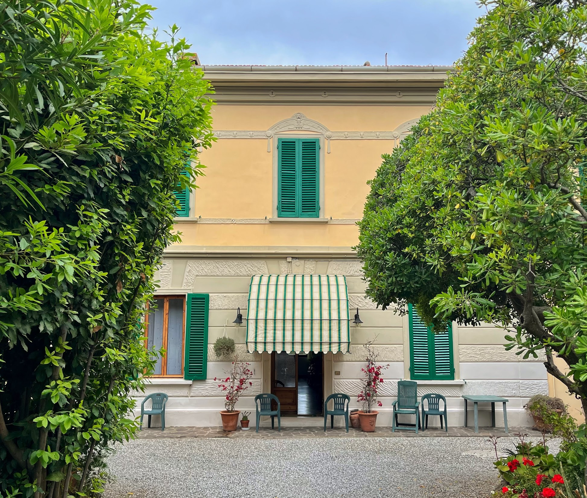
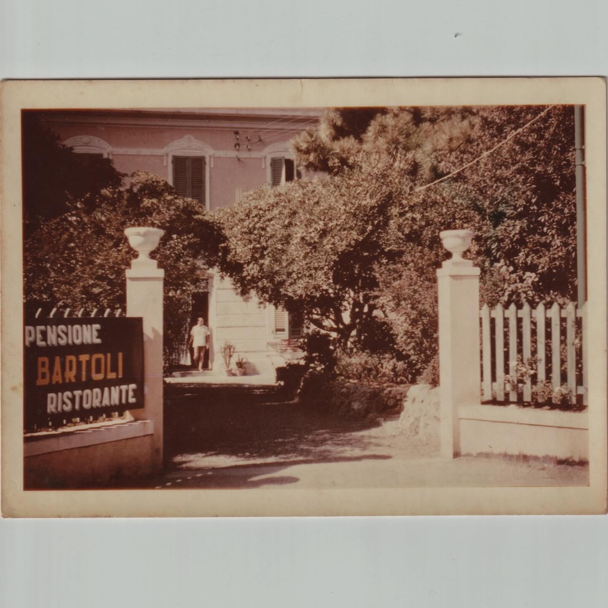
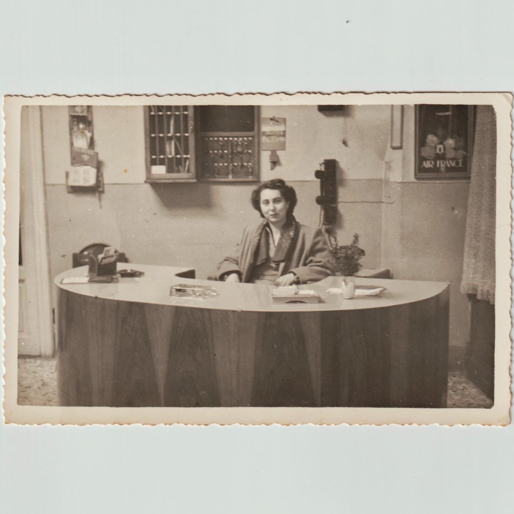
La famiglia Marchionneschi è custode delle mura della Pensione Bartoli da più di mezzo secolo, esattamente dal 1951. Da quell'anno parte la nostra storia: i protagonisti? Giovan Battista, Bianca e Aurora. La giovane coppia formata da nostro nonno e nonna, aveva appena avuto la prima figlia ed erano ancora gli anni del secondo dopoguerra quando si presentò loro con una grande nuova occasione, la vendita della Pensione Bartoli.
Dopo lunghe trattative, l'affare si fa, la villa passa dalla vecchia proprietaria Maria Bartoli Toninelli alla gestione familiare della coppia, aiutata dalla prozia Bianca. La prima impressione di nostra zia Rosabianca all'ingresso dopo tanta attesa e tante speranze era di essere estremamente poveri. Era tempo di rimboccarsi le maniche. Ma dopo tutto i bagnanti di una volta non erano pretenziosi come oggigiorno. Negli anni '50 i clienti non arrivavano col trolley pronto per il weekend, ma con giganteschi bauli che il povero facchino doveva portare dalla stazione a qui.
Nel 1961 ecco arrivare una nuova protagonista della nostra storia: una giovane ragazza di soli 14 anni viene per la prima volta a lavorare per la stagione da Guardistallo e il suo nome è Cesarina. Non è mai più tornata indietro e meno male, perché senza la sua attenzione ai dettagli e il suo duro lavoro, penso proprio che non saremmo ancora qui oggi: è stata cameriera, donna delle pulizie, dama di compagnia di Bianca ma da tutti viene ricordata come la cuoca di casa, per noi è invece tata Cesa.
"Autenticamente vecchio, ma delizioso."— da una nota rivista di viaggi
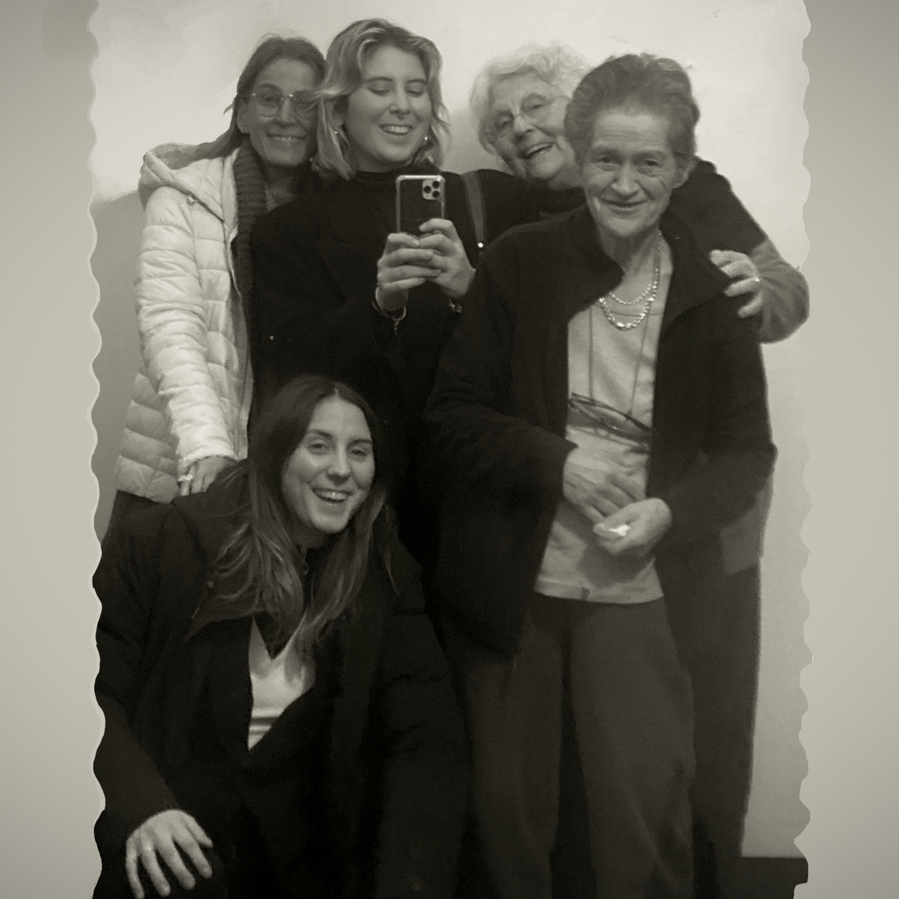
Anno dopo anno, una stagione dopo l'altra, arriviamo ad oggi, i protagonisti sono cambiati, ma siamo sempre gli stessi: la famiglia è cresciuta, la villa è cambiata ma l'energia e l'aria che si respira è sempre la stessa.
I soffitti alti, l'aria di salmastro e quella dolce attenzione di una gestione completamente al femminile. Nel tempo numerose donne forti, determinate e indipendenti ci hanno aiutato a prenderci cura di voi, dopotutto, la Sora Lola aveva gettato delle basi belle solide. Oggi ad accogliervi alla reception trovate sempre Rosabianca, ormai con capelli d'argento e Giulia, che sarei io, la più piccola delle "Bimbe".
Sedici camere singole, doppie e triple, di cui 5 con vista mare sulla Baia del Quercetano. Mura spesse e aria di mare, per un riposo autentico.
Scopri le camere"Il buon giorno si vede dal mattino": dolci artigianali fatti in casa con le ricette di famiglia, ogni giorno diversi.
Scopri la colazioneUna radura incantata a due passi da Piazza della Vittoria, dove la natura cresce spontanea all'ombra di pitosfori giganti.
Scopri il giardino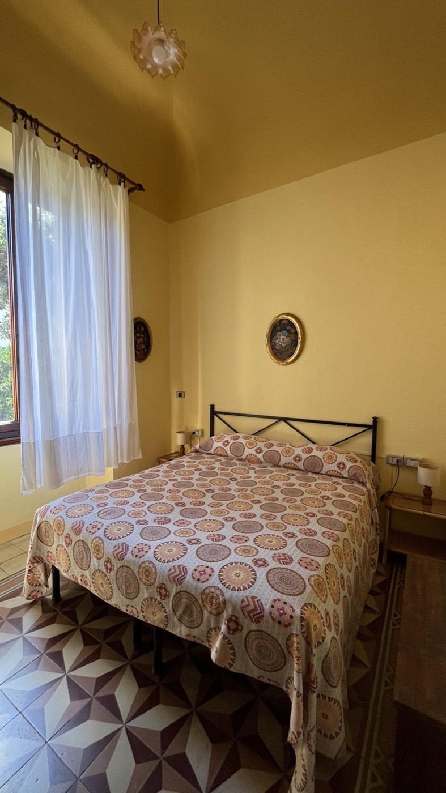
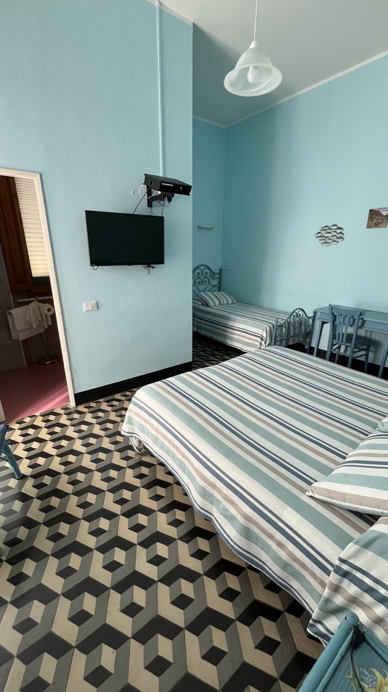
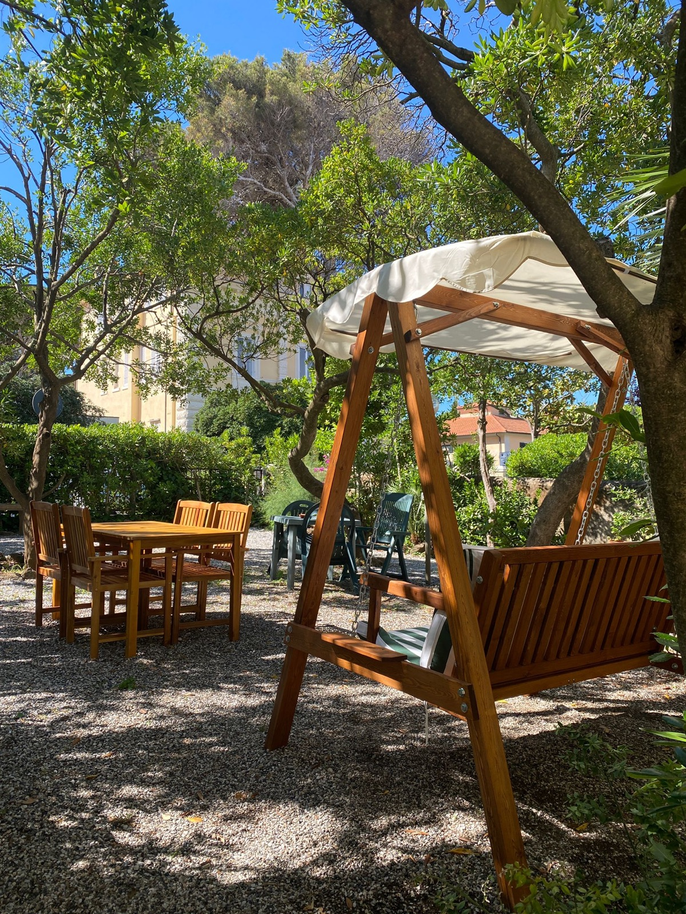
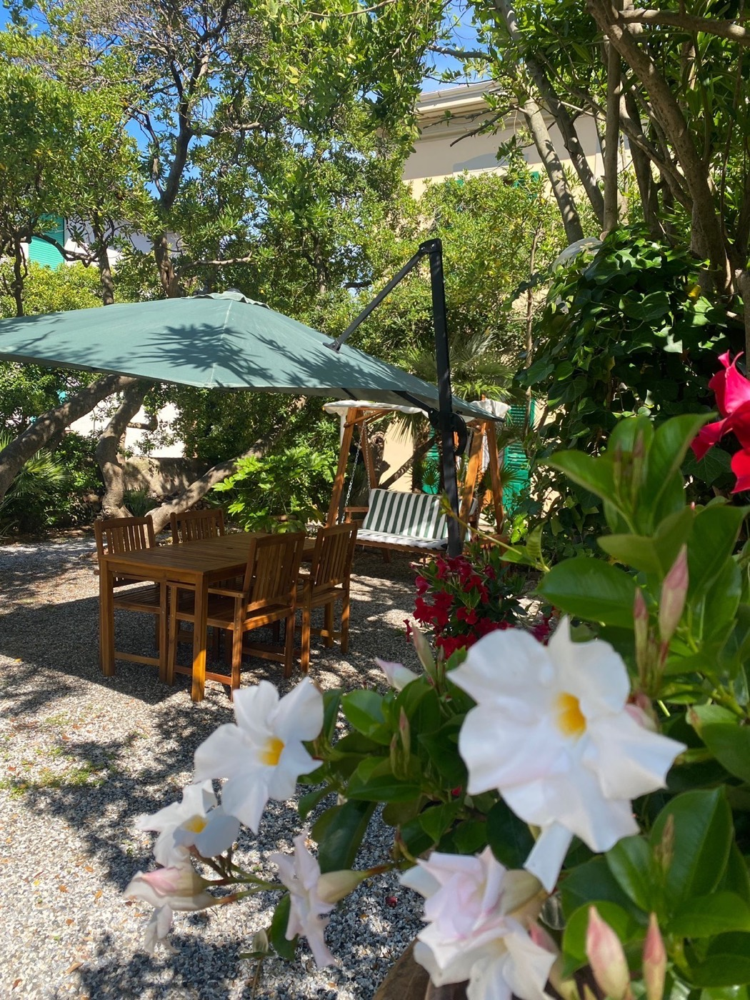
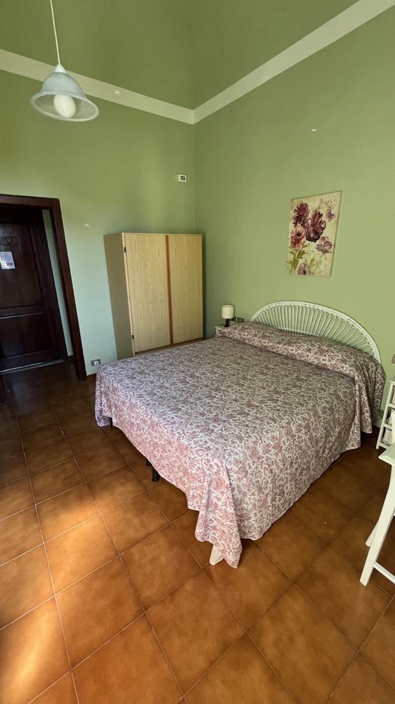
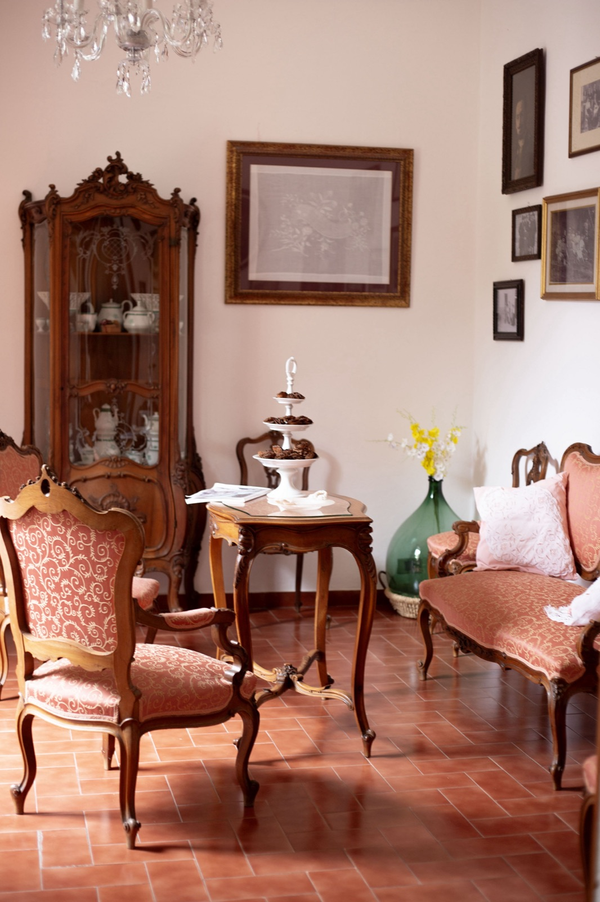
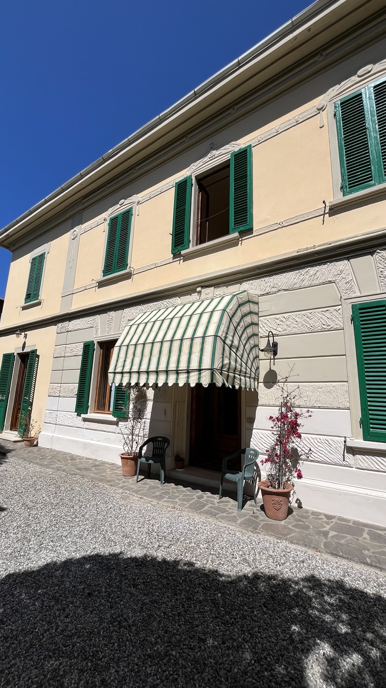
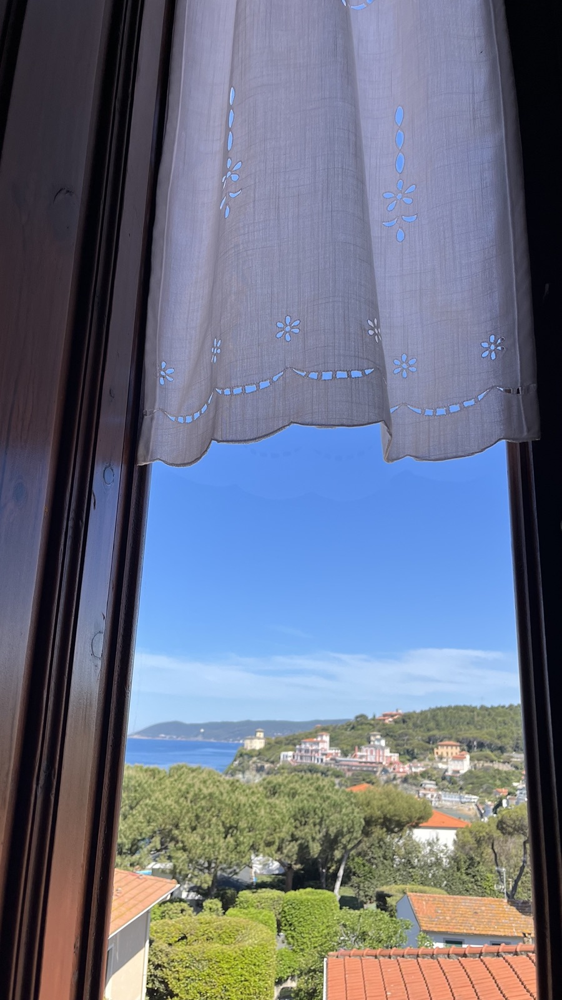
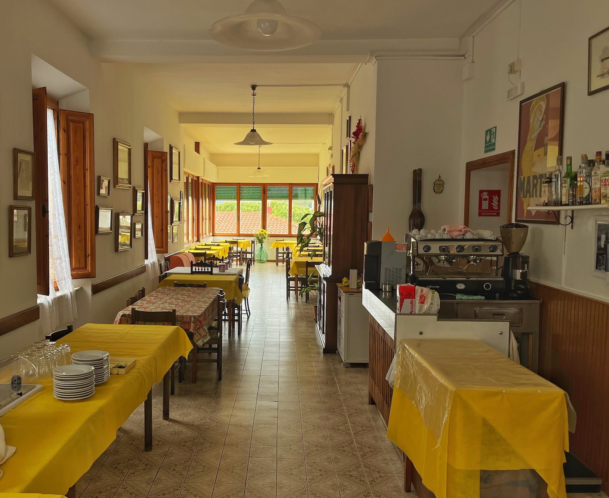
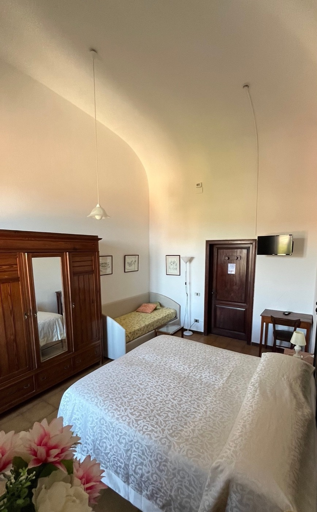
"Un albergo autenticamente vecchio, ma delizioso: qui il tempo sembra essersi fermato, con la stessa cura di sempre."Famiglia Marchionneschi · dal 1951